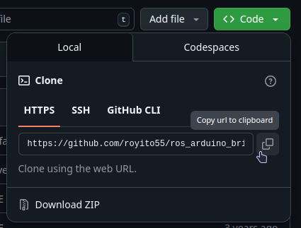
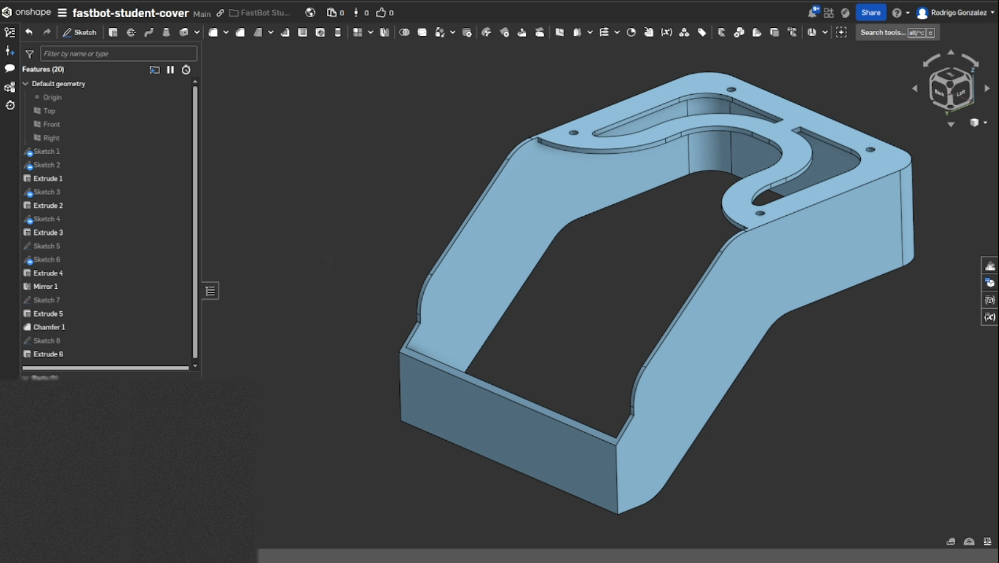
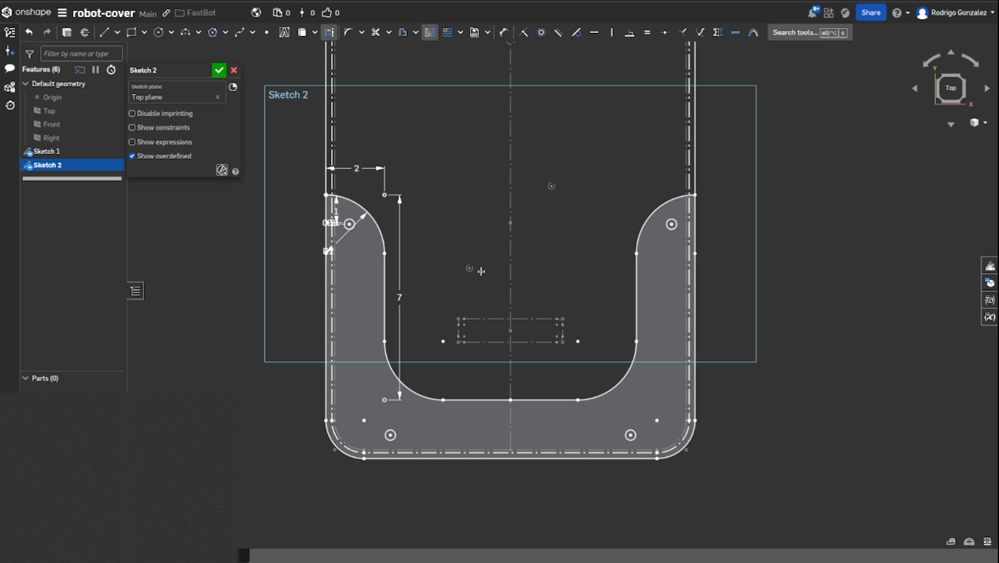
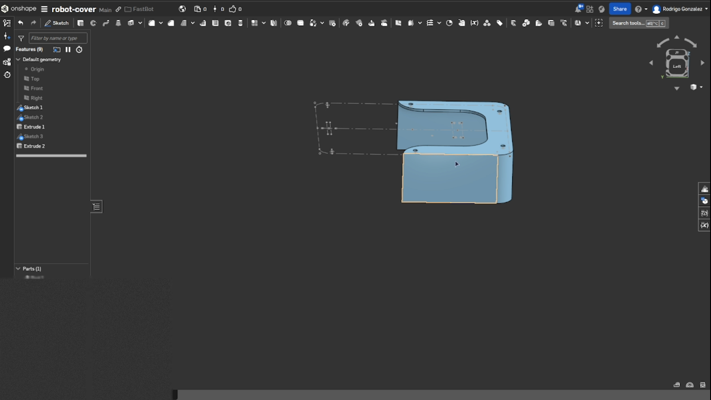
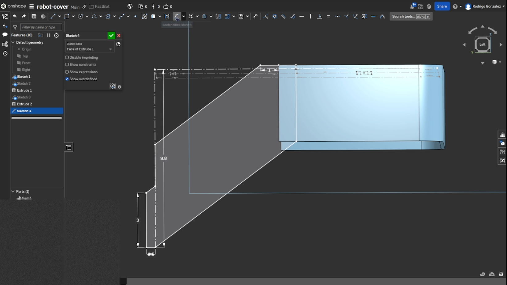
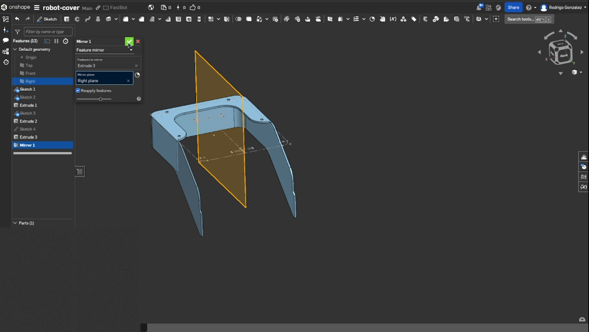
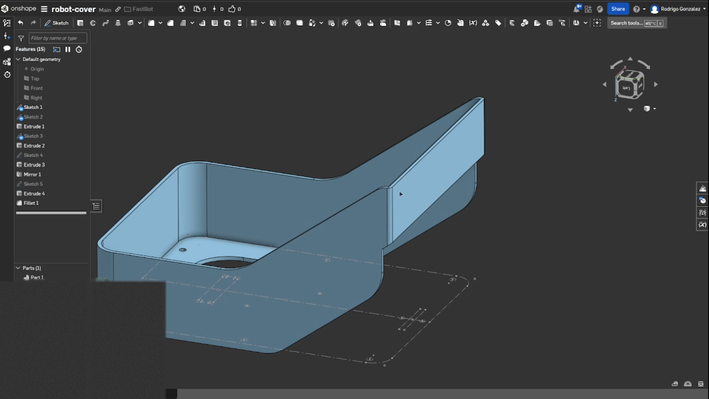

This is the last session of the course, and it's worth pausing to see the whole arc before diving back in. Lectures 1-8 built your ROS 2 fundamentals on the AgileX LIMO in simulation — nodes and topics, URDF and TF2, Gazebo and controllers, sensors and computer vision. Lectures 9-10 layered state estimation and autonomy on top: the EKF, AMCL, SLAM and Nav2. Lecture 11 cracked LIMO open for real and made you fluent in its actual electronics. Lectures 12-13 handed you a blank workbench and had you build Forge — motors, encoders, an H-bridge, a microcontroller, a power budget, a Linux brain, a ROS 2 driver, a CAD-derived URDF, and two working sensors.
Today closes the loop three times over. You'll take the URDF from Lecture 13 and adapt it for Gazebo, so Forge exists in simulation the way LIMO has since Lecture 6 — except every plugin parameter is one you derived yourself rather than one a manufacturer shipped for you. You'll design a 3D-printed cover, the one part of Forge that is purely yours to shape. And then the course ends the way it should: with you presenting the robot you built.
It might seem backwards to simulate Forge after building it, when Lecture 6 simulated LIMO long before you touched real hardware. Both orderings were deliberate. With LIMO, simulation came first because you didn't yet know enough to touch real motors safely. With Forge, you built the hardware first because by Lecture 12 you had that judgement — and simulating it now lets you develop and test navigation behaviours without burning battery cycles or risking a collision on every iteration. It's a good idea to create a simulation for every robot you use: it makes testing and validation dramatically faster. Simulation isn't a rehearsal for reality here; it's a faster, safer sandbox that sits alongside the real Forge on your bench.
That loop only works if the simulated robot and the real one present the same interface — the same topic names, the same frame names, the same URDF. Keeping them identical is the design constraint that shapes everything in §14.2-14.6.
fastbot_description with a generated robot.urdf and an assets/ mesh directory (§13.10)robot_state_publisher launch file (§13.11)gazebo_ros_pkgs for ROS 2 Humble, on a machine with a display — your workstation, not the headless Pi
The URDF that onshape-to-robot generated is accurate and complete — and completely static. Every
link name is hardcoded, so two Forges in one world would collide on frame names. There are no variables, so
retuning a dimension means editing several places. The first step toward simulation is converting it to
Xacro.
Xacro (XML Macro) is a preprocessor for URDF. ROS reads the Xacro file and expands it into standard URDF at runtime — same purpose, far easier to maintain. It gives you three things:
${wheel_diameter/2} instead of computing it yourselfConcretely, a URDF that repeats itself:
<link name="wheel_1">
<visual> <geometry> <cylinder length="0.1" radius="0.2"/> </geometry> </visual>
</link>
<link name="wheel_2">
<visual> <geometry> <cylinder length="0.1" radius="0.2"/> </geometry> </visual>
</link>becomes a macro instantiated twice:
<xacro:macro name="wheel" params="name">
<link name="${name}">
<visual>
<geometry>
<cylinder length="0.1" radius="0.2"/>
</geometry>
</visual>
</link>
</xacro:macro>
<xacro:wheel name="wheel_1"/>
<xacro:wheel name="wheel_2"/>
This is exactly the class of mistake Xacro exists to eliminate. You decide Forge's wheels are slightly
smaller than you first measured, you update the radius in the collision geometry, and you miss the identical
number in the visual geometry three lines down. Now the wheel you see in RViz isn't the wheel
Gazebo's physics engine collides with, and the robot behaves in a way that makes no visual sense. A single
xacro:property makes that impossible — the number lives in one place.
You don't rewrite the generated file — you make five surgical changes to it. Everything else stays exactly as
onshape-to-robot produced it.
robot.urdf to fastbot.xacro.<robot> tag.PI property and open a fastbot_body macro parameterised by robot_name, directly below the robot tag.</robot>.${robot_name}_.<robot name="fastbot" xmlns:xacro="http://ros.org/wiki/xacro">
<xacro:property name="PI" value="3.141592653589793" />
<xacro:macro name="fastbot_body" params="robot_name"> </xacro:macro>
</robot> <!-- Link base_link -->
<link name="${robot_name}_base_link">
...
<!-- Link fastbot_motor -->
<link name="${robot_name}_motor_1">${robot_name} pattern, for the third time
You met it in Lecture 13's driver launch file, again in robot_state_publisher, and now in the
robot description itself. That consistency is the whole point: with the body wrapped in a macro
parameterised by robot_name, spawning a second, independently-named Forge — for a classmate, or
for a two-robot Gazebo scenario — is a one-argument change, not a find-and-replace across every file in the
package. Namespacing decisions you made two sessions ago are still saving you rework today. That's what
"designing for scale from day one" looks like in practice, rather than as a slogan.
Make all five edits, then verify the file expands cleanly before involving Gazebo:
xacro fastbot.xacro robot_name:=fastbot > /tmp/expanded.urdf
check_urdf /tmp/expanded.urdf
Go further than the reference does: find every raw number that appears more than once in your Xacro (wheel
radius, wheel separation, plate thickness) and convert each into an xacro:property. Re-run
robot_state_publisher and confirm RViz renders Forge identically — a good refactor changes
nothing about what you see.
Here is the whole file after the five edits, so you can check your own against it. Read it as a reference rather than something to type: the geometry, origins and inertials were all machine-generated from the CAD assembly.
The <inertia> tensors are computed by onshape-to-robot from each part's
geometry and assigned material. In the published reference material a few of the longest lines are clipped
by the page margin; those are marked … below. Do not invent values for them —
they come out of your own export, and if a part shows near-zero or placeholder inertia that's the
"has no mass" warning from §13.10 telling you to assign it a material in CAD and re-export.
<?xml version="1.0" ?>
<!-- Generated using onshape-to-robot -->
<!-- Onshape document_id: 4757b8f98f7afcc7c3655639 -->
<robot name="fastbot" xmlns:xacro="http://ros.org/wiki/xacro">
<xacro:property name="PI" value="3.141592653589793" />
<xacro:macro name="fastbot_body" params="robot_name">
<!-- ============ Link: base_link (the chassis) ============ -->
<link name="${robot_name}_base_link">
<inertial>
<origin xyz="0 0 0" rpy="0 0 0"/>
<mass value="0.24695"/>
<inertia ixx="0.000946018" ixy="-8.62213e-08" ixz="-1.4272e-08"
iyy="0.000732103" iyz="…" izz="…"/>
</inertial>
<visual>
<origin xyz="0.0573343 -0.0691426 0.00134516" rpy="0 -0 3.14159"/>
<geometry>
<mesh filename="package://fastbot_description/onshape/assets/fastbot_chassis.stl"/>
</geometry>
<material name="fastbot_chassis_material">
<color rgba="0.262745 0.282353 0.301961 1.0"/>
</material>
</visual>
<collision>
<origin xyz="0.0573343 -0.0691426 0.00134516" rpy="0 -0 3.14159"/>
<geometry>
<mesh filename="package://fastbot_description/onshape/assets/fastbot_chassis.stl"/>
</geometry>
</collision>
</link>
<!-- ============ Link: motor_1 (right motor body) ============ -->
<link name="${robot_name}_motor_1">
<inertial>
<origin xyz="0.0067446 0.0085 -0.00855065" rpy="0 0 0"/>
<mass value="0.0339689"/>
<inertia ixx="2.5517e-06" ixy="-3.26147e-15" ixz="-9.70451e-07"
iyy="1.80062e-05" iyz="…" izz="…"/>
</inertial>
<visual>
<origin xyz="0.0935 -0.00775 -0.036" rpy="-1.5708 -1.5708 0"/>
<geometry>
<mesh filename="package://fastbot_description/onshape/assets/fastbot_motor.stl"/>
</geometry>
<material name="fastbot_motor_material">
<color rgba="0.129412 0.129412 0.129412 1.0"/>
</material>
</visual>
<collision>
<origin xyz="0.0935 -0.00775 -0.036" rpy="-1.5708 -1.5708 0"/>
<geometry>
<mesh filename="package://fastbot_description/onshape/assets/fastbot_motor.stl"/>
</geometry>
</collision>
</link>
<!-- ============ Link: wheel_right ============ -->
<link name="${robot_name}_wheel_right">
<inertial>
<origin xyz="0 0 0" rpy="0 0 0"/>
<mass value="0.03"/>
<inertia ixx="0.0001" ixy="0" ixz="0" iyy="0.0001" iyz="0" izz="0.0002"/>
</inertial>
<!-- Part wheel_d65x25_v1 (the rim) -->
<visual>
<origin xyz="0.1135 0.0162 0.103475" rpy="1.5708 1.5708 0"/>
<geometry>
<mesh filename="package://fastbot_description/onshape/assets/wheel_d65x25_v1.stl"/>
</geometry>
<material name="wheel_d65x25_v1_material">
<color rgba="0.290196 0.290196 0.290196 1.0"/>
</material>
</visual>
<collision>
<origin xyz="0.1135 0.0162 0.103475" rpy="1.5708 1.5708 0"/>
<geometry>
<mesh filename="package://fastbot_description/onshape/assets/wheel_d65x25_v1.stl"/>
</geometry>
</collision>
<!-- Part wheel_d65x25_v1_2 (the tyre) -->
<visual>
<origin xyz="0.1135 0.0162 0.1039" rpy="1.5708 1.5708 0"/>
<geometry>
<mesh filename="package://fastbot_description/onshape/assets/wheel_d65x25_v1__2.stl"/>
</geometry>
<material name="wheel_d65x25_v1_2_material">
<color rgba="1 0.933333 0.133333 1.0"/>
</material>
</visual>
<collision>
<origin xyz="0.1135 0.0162 0.1039" rpy="1.5708 1.5708 0"/>
<geometry>
<mesh filename="package://fastbot_description/onshape/assets/wheel_d65x25_v1__2.stl"/>
</geometry>
</collision>
</link>
<!-- Joint: motor_1 -> wheel_right (THE right drive joint) -->
<joint name="${robot_name}_right_wheel" type="continuous">
<origin xyz="-0.02 0.0085 -0.0191" rpy="0 0 0"/>
<parent link="${robot_name}_motor_1"/>
<child link="${robot_name}_wheel_right"/>
<axis xyz="0 0 1"/>
</joint>
<!-- Joint: chassis -> motor_1 -->
<joint name="${robot_name}_right_motor" type="fixed">
<origin xyz="-0.0266657 0.0243574 0.0260952" rpy="-1.5708 -2.94692e-47 -1.5708"/>
<parent link="${robot_name}_base_link"/>
<child link="${robot_name}_motor_1"/>
<axis xyz="0 0 1"/>
</joint>
<!-- ============ Link: motor_2 (left motor body) ============ -->
<link name="${robot_name}_motor_2">
<inertial>
<origin xyz="0.0067446 -0.0085 -0.00855065" rpy="0 0 0"/>
<mass value="0.0339689"/>
<inertia ixx="2.5517e-06" ixy="-3.26147e-15" ixz="-9.70451e-07"
iyy="1.80062e-05" iyz="…" izz="…"/>
</inertial>
<visual>
<origin xyz="0.0935 -0.02475 -0.036" rpy="-1.5708 -1.5708 0"/>
<geometry>
<mesh filename="package://fastbot_description/onshape/assets/fastbot_motor.stl"/>
</geometry>
<material name="fastbot_motor_2_material">
<color rgba="0.129412 0.129412 0.129412 1.0"/>
</material>
</visual>
<collision>
<origin xyz="0.0935 -0.02475 -0.036" rpy="-1.5708 -1.5708 0"/>
<geometry>
<mesh filename="package://fastbot_description/onshape/assets/fastbot_motor.stl"/>
</geometry>
</collision>
</link>
<!-- ============ Link: wheel_left ============ -->
<link name="${robot_name}_wheel_left">
<inertial>
<origin xyz="0 0 0" rpy="0 0 0"/>
<mass value="0.03"/>
<inertia ixx="0.0001" ixy="0" ixz="0" iyy="0.0001" iyz="0" izz="0.0002"/>
</inertial>
<visual>
<origin xyz="0.1135 0.0162 0.1039" rpy="1.5708 1.5708 0"/>
<geometry>
<mesh filename="package://fastbot_description/onshape/assets/wheel_d65x25_v1__2.stl"/>
</geometry>
<material name="wheel_d65x25_v1_3_material">
<color rgba="1 0.933333 0.133333 1.0"/>
</material>
</visual>
<collision>
<origin xyz="0.1135 0.0162 0.1039" rpy="1.5708 1.5708 0"/>
<geometry>
<mesh filename="package://fastbot_description/onshape/assets/wheel_d65x25_v1__2.stl"/>
</geometry>
</collision>
<visual>
<origin xyz="0.1135 0.0162 0.104325" rpy="1.5708 1.5708 0"/>
<geometry>
<mesh filename="package://fastbot_description/onshape/assets/wheel_d65x25_v1.stl"/>
</geometry>
<material name="wheel_d65x25_v1_4_material">
<color rgba="0.290196 0.290196 0.290196 1.0"/>
</material>
</visual>
<collision>
<origin xyz="0.1135 0.0162 0.104325" rpy="1.5708 1.5708 0"/>
<geometry>
<mesh filename="package://fastbot_description/onshape/assets/wheel_d65x25_v1.stl"/>
</geometry>
</collision>
</link>
<!-- Joint: motor_2 -> wheel_left (THE left drive joint) -->
<joint name="${robot_name}_left_wheel" type="continuous">
<origin xyz="-0.02 -0.0085 -0.0191" rpy="0 0 0"/>
<parent link="${robot_name}_motor_2"/>
<child link="${robot_name}_wheel_left"/>
<axis xyz="0 0 -1"/>
</joint>
<!-- Joint: chassis -> motor_2 -->
<joint name="${robot_name}_left_motor" type="fixed">
<origin xyz="0.0213343 0.0243574 0.0260952" rpy="1.5708 -2.96391e-30 -1.5708"/>
<parent link="${robot_name}_base_link"/>
<child link="${robot_name}_motor_2"/>
<axis xyz="0 0 1"/>
</joint>
<!-- ============ Link: LSLiDAR N-10 ============ -->
<link name="${robot_name}_n10_v2">
<inertial>
<origin xyz="0 0 0" rpy="0 0 0"/>
<mass value="0.05"/>
<inertia ixx="1e-09" ixy="0" ixz="0" iyy="1e-09" iyz="0" izz="1e-09"/>
</inertial>
<visual>
<origin xyz="-0.074 -0.06 0.11" rpy="-3.14159 5.94511e-32 -8.90522e-65"/>
<geometry>
<mesh filename="package://fastbot_description/onshape/assets/lslidar_n10.stl"/>
</geometry>
<material name="lslidar_n10_material">
<color rgba="0.0980392 0.0980392 0.0980392 1.0"/>
</material>
</visual>
<collision>
<origin xyz="-0.074 -0.06 0.11" rpy="-3.14159 5.94511e-32 -8.90522e-65"/>
<geometry>
<mesh filename="package://fastbot_description/onshape/assets/lslidar_n10.stl"/>
</geometry>
</collision>
</link>
<joint name="${robot_name}_lidar" type="fixed">
<origin xyz="-0.0166657 -0.00914257 0.111345" rpy="3.14159 1.13983e-46 -3.14159"/>
<parent link="${robot_name}_base_link"/>
<child link="${robot_name}_n10_v2"/>
<axis xyz="0 0 1"/>
</joint>
<!-- ============ Link: Raspicam ============ -->
<link name="${robot_name}_camera">
<inertial>
<origin xyz="0 0 0" rpy="0 0 0"/>
<mass value="0.01"/>
<inertia ixx="1e-09" ixy="0" ixz="0" iyy="1e-09" iyz="0" izz="1e-09"/>
</inertial>
<visual>
<origin xyz="-0.0105 0.0125 -0.00212" rpy="3.14159 -3.05067e-31 -1.55575e-61"/>
<geometry>
<mesh filename="package://fastbot_description/onshape/assets/raspicam.stl"/>
</geometry>
<material name="raspicam_material">
<color rgba="0.34902 0.376471 0.4 1.0"/>
</material>
</visual>
<collision>
<origin xyz="-0.0105 0.0125 -0.00212" rpy="3.14159 -3.05067e-31 -1.55575e-61"/>
<geometry>
<mesh filename="package://fastbot_description/onshape/assets/raspicam.stl"/>
</geometry>
</collision>
</link>
<joint name="${robot_name}_camera" type="fixed">
<origin xyz="0.00783428 -0.0661426 0.100995" rpy="-1.5708 1.14468e-45 6.41848e-15"/>
<parent link="${robot_name}_base_link"/>
<child link="${robot_name}_camera"/>
<axis xyz="0 0 1"/>
</joint>
<!-- ============ Link: ball caster (third ground contact) ============ -->
<link name="${robot_name}_ball_caster">
<inertial>
<origin xyz="0 0 0" rpy="0 0 0"/>
<mass value="0.01"/>
<inertia ixx="1e-09" ixy="0" ixz="0" iyy="1e-09" iyz="0" izz="1e-09"/>
</inertial>
<visual>
<origin xyz="0.006731 0 -0.0106945" rpy="-1.5708 -0 0"/>
<geometry>
<mesh filename="package://fastbot_description/onshape/assets/pololu_ball_caster.stl"/>
</geometry>
<material name="pololu_ball_caster_material">
<color rgba="0.34902 0.376471 0.4 1.0"/>
</material>
</visual>
<collision>
<origin xyz="0.006731 0 -0.0106945" rpy="-1.5708 -0 0"/>
<geometry>
<mesh filename="package://fastbot_description/onshape/assets/pololu_ball_caster.stl"/>
</geometry>
</collision>
</link>
<joint name="caster" type="fixed">
<origin xyz="-0.0100317 -0.0541426 0.00334516" rpy="0 -0 0"/>
<parent link="${robot_name}_base_link"/>
<child link="${robot_name}_ball_caster"/>
<axis xyz="0 0 1"/>
</joint>
</xacro:macro>
</robot>axis xyz="0 0 1" on the right, "0 0 -1" on the left. That's what makes a positive command spin both wheels the geometrically correct way. Get it wrong and nothing errors — the robot just drives in a slow circle. Lecture 4 warned you about exactly this on LIMO.caster joint is the only name in the file without a ${robot_name}_ prefix. That's an oversight in the reference file, and it means two Forges in one world would collide on that one joint name. Fix it in yours.${robot_name}_camera. URDF tolerates this because links and joints live in separate namespaces, but it makes error messages ambiguous and is worth renaming.
Fix all three issues above in your own Xacro, then re-expand and re-run check_urdf. Then, to
prove the macro actually works, expand it twice with different names
(robot_name:=fastbot_1 and robot_name:=fastbot_2) and confirm no link or joint
name collides between the two outputs. If one does, you missed a prefix.
A URDF describes shape and structure; it says nothing about how a robot behaves. Gazebo plugins add that behaviour and tie it into ROS messages — think of them as virtual motors and virtual sensors bolted onto the description. Forge needs three: a differential drive, a LiDAR and a camera.
Keeping the plugins in a separate file from the body description is the modularity Xacro's file inclusion
buys you: the same fastbot.xacro body serves both the real robot (no plugins) and the simulated
one (plugins included).
<?xml version="1.0" ?>
<robot name="fastbot" xmlns:xacro="http://www.ros.org/wiki/xacro">
<xacro:macro name="fastbot_plugins" params="robot_name">
<!-- Differential drive plugin for Gazebo -->
<gazebo>
<plugin name='${robot_name}_diff_drive' filename='libgazebo_ros_diff_drive.so'>
<ros>
<namespace>${robot_name}</namespace>
<argument>--ros-args --remap /cmd_vel:=/${robot_name}/cmd_vel /odom:=/${robot_name}/odom</argument>
</ros>
<!-- wheels -->
<left_joint>${robot_name}_left_wheel</left_joint>
<right_joint>${robot_name}_right_wheel</right_joint>
<!-- kinematics -->
<wheel_separation>0.12</wheel_separation>
<wheel_diameter>0.065</wheel_diameter>
<!-- limits -->
<max_wheel_torque>20</max_wheel_torque>
<max_wheel_acceleration>1.0</max_wheel_acceleration>
<!-- output -->
<publish_odom>true</publish_odom>
<publish_odom_tf>true</publish_odom_tf>
<publish_wheel_tf>true</publish_wheel_tf>
<odometry_frame>${robot_name}_odom</odometry_frame>
<robot_base_frame>${robot_name}_base_link</robot_base_frame>
</plugin>
</gazebo>
</xacro:macro>
</robot>| Element | What it does |
|---|---|
libgazebo_ros_diff_drive.so | Gazebo's stock differential-drive plugin — conceptually the same one you studied for LIMO in Lecture 6. |
<namespace> + <argument> | Isolates the subscribed and published topics under the robot name: /fastbot/cmd_vel rather than a bare /cmd_vel. The same isolation the real driver does. |
<left_joint> / <right_joint> | Which URDF joints the plugin actuates. These names must match the Xacro exactly, prefix and all. |
<wheel_separation> / <wheel_diameter> | The kinematics: 0.12 m apart, 0.065 m diameter. Directly analogous to the driver node's parameters in §13.5. |
<publish_odom> / <publish_odom_tf> | Publishes /fastbot/odom and broadcasts the odom → base_link transform, so the simulated robot exposes the same interface as the real one. |
0.12 and 0.065 are typed here as raw literals. Worse, that 0.12
wheel separation disagrees with the 0.17 default in your motor_driver.py from
§13.5 — and if the real robot and the simulated one disagree about their own geometry, they will turn by
different amounts for the same /cmd_vel, which quietly destroys the whole point of having a
digital twin. Measure your actual wheel separation, define it once as an xacro:property, and
reference ${wheel_separation} and ${wheel_diameter} in both places.
The real robot's odometry comes from encoder counts integrated by motor_driver.py; the
simulated robot's comes from Gazebo's physics engine, which knows the ground truth exactly. Which of these
will drift, and which won't? What does that mean for testing a localization algorithm — like the AMCL from
Lecture 10 — purely in simulation?
Now Forge needs to perceive the simulated world. Add both sensor blocks to the same
fastbot_plugins.gazebo file, inside the same macro.
<gazebo reference="${robot_name}_lidar">
<sensor name="${robot_name}_lslidar" type="ray">
<always_on>true</always_on>
<visualize>false</visualize>
<update_rate>10</update_rate>
<ray>
<scan>
<horizontal>
<samples>270</samples>
<min_angle>-3.141593</min_angle>
<max_angle>3.141593</max_angle>
</horizontal>
</scan>
<range>
<min>0.05</min>
<max>20.0</max>
<resolution>0.015000</resolution>
</range>
<noise>
<type>gaussian</type>
<mean>0.0</mean>
<stddev>0.0</stddev>
</noise>
</ray>
<plugin name="${robot_name}_scan" filename="libgazebo_ros_ray_sensor.so">
<ros>
<remapping>~/out:=${robot_name}/scan</remapping>
</ros>
<output_type>sensor_msgs/LaserScan</output_type>
<frame_name>${robot_name}_lidar</frame_name>
</plugin>
</sensor>
</gazebo>| Property | Value | Comment |
|---|---|---|
| Plugin | libgazebo_ros_ray_sensor.so | Gazebo's stock ray/LiDAR plugin |
| Samples | 270 horizontal rays | The real N-10's angular resolution is 0.48-0.96°, which over 360° is roughly 375-750 points. 270 is coarser. |
| Field of view | −π to +π (full 360°) | Matches the real sensor |
| Range | 0.05 - 20.0 m | The real N-10 is 0.2 - 12.0 m. The simulation is more capable than the hardware. |
| Noise | Gaussian, stddev 0.0 | Perfect, noise-free readings |
| Output | sensor_msgs/LaserScan on /${robot_name}/scan | Same message type as the real driver publishes |
Look at that table again. The simulated LiDAR is noise-free (every range is geometrically
exact), reaches 20 m when the real one manages 12, and starts at 5 cm
when the real one starts at 20. An obstacle-avoidance or SLAM algorithm tuned against this sensor has never
had to cope with a single noisy return, has learned to trust long-range readings the real sensor cannot
provide, and may rely on close-range returns the real sensor will simply report as invalid. That is the same
sim-to-real gap Lecture 11 raised for LIMO's real sensors versus their Gazebo counterparts. If you plan to
run SLAM or AMCL on simulated Forge, set the range limits honestly and add a realistic
stddev — the datasheet's ±3 cm is a reasonable starting point.
<gazebo reference="${robot_name}_camera">
<sensor type="camera" name="${robot_name}_camera">
<update_rate>30.0</update_rate>
<camera name="${robot_name}_head">
<horizontal_fov>1.3962634</horizontal_fov>
<image>
<width>800</width>
<height>800</height>
<format>R8G8B8</format>
</image>
<clip>
<near>0.02</near>
<far>300</far>
</clip>
<noise>
<type>gaussian</type>
<mean>0.0</mean>
<stddev>0.007</stddev>
</noise>
</camera>
<plugin name="${robot_name}_camera_controller" filename="libgazebo_ros_camera.so">
<ros>
<namespace>/</namespace>
</ros>
<alwaysOn>true</alwaysOn>
<updateRate>0.0</updateRate>
<imageTopicName>image_raw</imageTopicName>
<cameraInfoTopicName>camera_info</cameraInfoTopicName>
<frameName>${robot_name}_camera</frameName>
<hackBaseline>0.07</hackBaseline>
<distortionK1>0.0</distortionK1>
<distortionK2>0.0</distortionK2>
<distortionK3>0.0</distortionK3>
<distortionT1>0.0</distortionT1>
<distortionT2>0.0</distortionT2>
</plugin>
</sensor>
</gazebo>| Property | Value | Comment |
|---|---|---|
| Plugin | libgazebo_ros_camera.so | Gazebo's stock camera plugin |
| Field of view | 1.3962634 rad ≈ 80° | Roughly matches the Raspicam v2's ~62° horizontal FOV — check yours |
| Resolution | 800 × 800, R8G8B8 | Square, unlike the real 4:3 sensor, and far larger than the 320×240 the real node publishes (§13.14) |
| Clip range | 0.02 m near, 300 m far | What the virtual lens can see |
| Noise | Gaussian, stddev 0.007 | A small amount of pixel noise — unlike the LiDAR block above |
| Output | image_raw and camera_info | Pixels, plus the calibration any downstream vision or Nav2 node needs to interpret them |
Notice that this block does carry a noise term while the LiDAR block doesn't. That's a useful reminder: "add realistic noise" isn't an all-or-nothing setting for a simulation, it's a per-sensor decision based on how much that sensor's imperfections matter for what you're testing.
Both sensor blocks use <gazebo reference="${robot_name}_lidar"> and
reference="${robot_name}_camera" — but in the Xacro from §14.3, the LiDAR link is
called ${robot_name}_n10_v2 and ${robot_name}_lidar is the joint name. A
<gazebo reference> attaches to a link. If the name doesn't match a link,
the sensor silently attaches to nothing and publishes nothing — another clean-launch-no-data failure, the
third in this build arc. Make these names agree with your own generated URDF before you run anything.
Spawn simulated Forge, subscribe to the simulated camera's image topic, and compare a captured frame against one from the real Raspicam in Lecture 13 (same object, similar lighting). List three visible differences — resolution, field of view, noise character, colour — and for each, decide whether it's a simulation limitation worth fixing or one that doesn't matter for your purposes.
Three plugin blocks don't spawn a robot by themselves. A small tree of launch files has to start Gazebo, load a world, wait for the physics server to be ready, publish the robot description, and then ask Gazebo to spawn an entity from it at a chosen pose.
import os
from launch import LaunchDescription
from launch.actions import IncludeLaunchDescription, TimerAction
from launch.launch_description_sources import AnyLaunchDescriptionSource
from launch.substitutions import (
LaunchConfiguration,
ThisLaunchFileDir,
PathJoinSubstitution,
)
def generate_launch_description():
# Resolve the paths to the XML launch files.
dir_path = ThisLaunchFileDir()
launch_first_path = PathJoinSubstitution([dir_path, "botbox_world.launch.xml"])
launch_second_path = PathJoinSubstitution([dir_path, "spawn_fastbot.launch.xml"])
launch_first_action = IncludeLaunchDescription(
AnyLaunchDescriptionSource(launch_first_path),
launch_arguments={"arg": "value"}.items(),
)
launch_second_action = IncludeLaunchDescription(
AnyLaunchDescriptionSource(launch_second_path),
launch_arguments={"arg": "value"}.items(),
)
# Delay the robot spawn so the physics server has time to come up.
delay_second_launch = TimerAction(
period=2.0, actions=[launch_second_action]
)
return LaunchDescription([launch_first_action, delay_second_launch])
Spawning an entity before gzserver has fully finished starting is a classic source of a flaky,
intermittent "the robot never appeared" failure — it works on your machine and fails on a slower one, or
fails one run in five. If your spawn fails sporadically, check this delay before you go hunting for
a bug in your URDF. Two seconds is a heuristic, not a guarantee; on a loaded machine you may need
more.
<?xml version='1.0' ?>
<launch>
<arg name="map_package" default="fastbot_description" description="Name of the map package" />
<arg name="map_name" default="botbox_warehouse" description="Name of the world to simulate" />
<arg name="headless" default='0'/>
<arg name="gazebo_version" default="11"/>
<let name="world_path" value="$(find-pkg-share fastbot_gazebo)/worlds/$(var map_name).world" />
<let name="model_path" value="$(find-pkg-share fastbot_gazebo)/models:/usr/share/gazebo-$(var gazebo_version)/models" />
<let name="resource_path" value="/usr/share/gazebo-$(var gazebo_version)" />
<let name="plugin_path" value="/usr/share/gazebo-$(var gazebo_version)" />
<executable cmd="gzserver --verbose -s libgazebo_ros_factory.so -s libgazebo_ros_init.so $(var world_path)"
output="both">
<env name="GAZEBO_MODEL_PATH" value="$(var model_path)" />
<env name="GAZEBO_RESOURCE_PATH" value="$(var resource_path)" />
<env name="GAZEBO_PLUGIN_PATH" value="$(var plugin_path)" />
<env name="GAZEBO_MODEL_DATABASE_URI" value="" />
</executable>
<group unless="$(var headless)">
<executable cmd="gzclient --verbose $(var world_path)" output="both">
<env name="GAZEBO_MODEL_PATH" value="$(var model_path)" />
<env name="GAZEBO_RESOURCE_PATH" value="$(var resource_path)" />
<env name="GAZEBO_PLUGIN_PATH" value="$(var plugin_path)" />
</executable>
</group>
</launch>gzserver and gzclient are separate
gzserver is the headless physics engine; gzclient is the 3D viewer. Splitting them
means you can run the simulation with headless:=1 on a machine with no display — a CI runner, a
remote box, an automated test suite — and attach a viewer only when a human wants to watch. The two
libgazebo_ros_* plugins loaded with -s are what let ROS 2 spawn entities into the
world and share its clock. The reference file also carries optional crowd-simulation arguments, which Forge
doesn't use and which are omitted here.
<?xml version='1.0' ?>
<launch>
<include file="$(find-pkg-share fastbot_gazebo)/launch/spawn.launch.xml">
<arg name="robot_name" value="fastbot"/>
<arg name="robot_file" value="fastbot_multi_sim.xacro"/>
<arg name="x_spawn" value="0.5"/>
<arg name="y_spawn" value="-0.75"/>
<arg name="z_spawn" value="0.1"/>
<arg name="roll_spawn" value="0.0"/>
<arg name="pitch_spawn" value="0.0"/>
<arg name="yaw_spawn" value="1.52"/>
</include>
</launch><?xml version="1.0" encoding="UTF-8"?>
<launch>
<arg name="robot_name" default="fastbot"/>
<arg name="robot_file" default="fastbot_multi_sim.xacro"/>
<arg name="x_spawn" default="2.8162"/>
<arg name="y_spawn" default="-1.04"/>
<arg name="z_spawn" default="0.0"/>
<arg name="roll_spawn" default="0.0"/>
<arg name="pitch_spawn" default="0.0"/>
<arg name="yaw_spawn" default="0.0"/>
<include file="$(find-pkg-share fastbot_description)/launch/robot_state_publisher.launch.py">
<arg name="robot_name" value="$(var robot_name)"/>
<arg name="robot_file" value="$(var robot_file)"/>
</include>
<include file="$(find-pkg-share fastbot_gazebo)/launch/spawn_in_gazebo.launch.py">
<arg name="robot_name" value="$(var robot_name)"/>
<arg name="x_spawn" value="$(var x_spawn)"/>
<arg name="y_spawn" value="$(var y_spawn)"/>
<arg name="z_spawn" value="$(var z_spawn)"/>
<arg name="roll_spawn" value="$(var roll_spawn)"/>
<arg name="pitch_spawn" value="$(var pitch_spawn)"/>
<arg name="yaw_spawn" value="$(var yaw_spawn)"/>
</include>
</launch>z_spawn is not zero, deliberately
Spawning at z = 0.1 drops Forge from 10 cm above the floor rather than starting it exactly
on the ground. That small drop avoids the physics engine finding the wheels already interpenetrating the
ground plane, which produces a violent initial correction — a robot that launches itself across the world on
the first timestep. If your robot does exactly that on spawn, raise this number.
This is the same file as §13.11 with one difference: the description path points at
models/urdf/ rather than onshape/, because the simulation version of the Xacro
(fastbot_multi_sim.xacro) includes the plugin file. It belongs in
fastbot_description/launch alongside the hardware version.
import os
from ament_index_python.packages import get_package_share_directory
from launch import LaunchDescription
from launch_ros.actions import Node
import xacro
from launch.actions import DeclareLaunchArgument, OpaqueFunction
from launch.substitutions import LaunchConfiguration
def launch_setup(context, *args, **kwargs):
####### DATA INPUT ##########
robot_name = LaunchConfiguration("robot_name").perform(context)
robot_file = LaunchConfiguration("robot_file").perform(context)
robot_description_topic_name = "/" + robot_name + "_robot_description"
robot_state_publisher_name = robot_name + "_robot_state_publisher"
joint_state_topic_name = "/" + robot_name + "/joint_states"
package_description = "fastbot_description"
robot_desc_path = os.path.join(
get_package_share_directory(package_description), "models/urdf/", robot_file
)
# Load the XACRO file with arguments.
robot_desc = xacro.process_file(
robot_desc_path, mappings={"robot_name": robot_name}
)
xml = robot_desc.toxml()
robot_state_publisher_node = Node(
package="robot_state_publisher",
executable="robot_state_publisher",
name=robot_state_publisher_name,
emulate_tty=True,
parameters=[{"use_sim_time": True, "robot_description": xml}],
remappings=[
("/robot_description", robot_description_topic_name),
("/joint_states", joint_state_topic_name),
],
output="screen",
)
return [robot_state_publisher_node]
def generate_launch_description():
robot_name_arg = DeclareLaunchArgument("robot_name", default_value="fastbot")
robot_file_arg = DeclareLaunchArgument(
"robot_file", default_value="fastbot_multi_sim.xacro"
)
return LaunchDescription(
[robot_name_arg, robot_file_arg, OpaqueFunction(function=launch_setup)]
)
Here use_sim_time: True is correct — Gazebo publishes /clock, and every node
in the simulation must use it. That's exactly why §13.11 flagged the same line as a bug on real hardware: the
right value depends on which world the node is living in, which is why it should be an argument rather than a
constant.
<?xml version="1.0" ?>
<robot name="fastbot" xmlns:xacro="http://www.ros.org/wiki/xacro">
<xacro:arg name="robot_name" default="fastbot"/>
<!-- The body, from Section 14.3 -->
<xacro:include filename="$(find fastbot_description)/onshape/fastbot.xacro"/>
<!-- The Gazebo plugins, from Sections 14.4-14.5 -->
<xacro:include filename="$(find fastbot_gazebo)/gazebo/fastbot_plugins.gazebo"/>
<xacro:fastbot_body robot_name="$(arg robot_name)"/>
<xacro:fastbot_plugins robot_name="$(arg robot_name)"/>
</robot>
This tiny file is where the modularity pays off: the hardware description
(robot.urdf/fastbot.xacro) and the simulation behaviours
(fastbot_plugins.gazebo) are composed here, and nowhere else. The real robot loads the body alone;
the simulation loads body plus plugins. One source of geometric truth, two consumers.
import os
from launch import LaunchDescription
from launch_ros.actions import Node
from launch.actions import DeclareLaunchArgument, OpaqueFunction
from launch.substitutions import LaunchConfiguration
def launch_setup(context, *args, **kwargs):
entity_name = LaunchConfiguration('robot_name').perform(context)
x_spawn = LaunchConfiguration('x_spawn').perform(context)
y_spawn = LaunchConfiguration('y_spawn').perform(context)
z_spawn = LaunchConfiguration('z_spawn').perform(context)
roll_spawn = LaunchConfiguration('roll_spawn').perform(context)
pitch_spawn = LaunchConfiguration('pitch_spawn').perform(context)
yaw_spawn = LaunchConfiguration('yaw_spawn').perform(context)
position = [x_spawn, y_spawn, z_spawn] # [X, Y, Z]
orientation = [roll_spawn, pitch_spawn, yaw_spawn] # [Roll, Pitch, Yaw]
robot_description_topic_name = "/" + entity_name + "_robot_description"
robot_state_publisher_name = entity_name + "_robot_state_publisher"
spawn_node_name = entity_name + "_spawn_entity"
spawn_robot = Node(
package='gazebo_ros',
executable='spawn_entity.py',
name=spawn_node_name,
output='screen',
emulate_tty=True,
arguments=[
'-entity', entity_name,
'-x', str(position[0]), '-y', str(position[1]), '-z', str(position[2]),
'-R', str(orientation[0]), '-P', str(orientation[1]), '-Y', str(orientation[2]),
'-topic', robot_description_topic_name,
],
remappings=[("/robot_state_publisher", robot_state_publisher_name)],
)
return [spawn_robot]
def generate_launch_description():
robot_name_arg = DeclareLaunchArgument('robot_name', default_value='fastbot')
x_spawn_arg = DeclareLaunchArgument('x_spawn', default_value='0.0')
y_spawn_arg = DeclareLaunchArgument('y_spawn', default_value='0.0')
z_spawn_arg = DeclareLaunchArgument('z_spawn', default_value='0.0')
roll_spawn_arg = DeclareLaunchArgument('roll_spawn', default_value='0.0')
pitch_spawn_arg = DeclareLaunchArgument('pitch_spawn', default_value='0.0')
yaw_spawn_arg = DeclareLaunchArgument('yaw_spawn', default_value='0.0')
return LaunchDescription([
robot_name_arg,
x_spawn_arg,
y_spawn_arg,
z_spawn_arg,
roll_spawn_arg,
pitch_spawn_arg,
yaw_spawn_arg,
OpaqueFunction(function=launch_setup),
])
Note -topic rather than -file: spawn_entity.py reads the robot
description from the namespaced ROS topic that robot_state_publisher just published, rather than
from a file on disk. That's what keeps one Xacro serving both the visualization and the physics, and what
makes the ${robot_name} plumbing from §14.2 pay off.
This section covers what Forge needs, not everything Gazebo can do. Worlds, models, physics tuning, custom plugins and sensor modelling are a whole subject in their own right — Lecture 6 of this course is the starting point, and The Construct's Mastering Gazebo Simulator goes considerably further.
One practical wrinkle: the simulation needs a machine with a display and a decent GPU, and Forge's Pi has neither. Your packages live on the Pi; the simulation runs on your workstation (or a cloud dev environment). Getting the code from one to the other is a job for git — and doing it properly is a genuine professional skill, not an inconvenience.
.gitignore
fastbot_description/onshape/api-keys.sh holds your Onshape access and secret keys (§13.10). If
you push it, treat those keys as compromised and rotate them immediately. Confirm before committing:
cat .gitignore # should list onshape/api-keys.sh
git status --porcelain # api-keys.sh must NOT appear
Create two repositories on GitHub named fastbot_description and
fastbot_gazebo. ⚠️ Leave Add a README unchecked and the .gitignore template
set to None — either one creates an initial commit that your local history doesn't share, and your
first push will be rejected.
Copy each repository's HTTPS URL from the green Code button:

🌐✅ Your packages are on GitHub. Check the website — your code should be there.
✅ Forge should appear in the Gazebo window.
Follow the on-screen instructions to drive Forge around its environment — i forward,
, back, j/l to turn, k to stop, q/z
to scale speed. This is the identical command you used on the real robot in §13.6, differing only in
which machine it's pointed at. That interchangeability is the payoff of every naming decision in this build
arc.
Run the same manoeuvre on both robots: drive straight forward for 5 seconds at the same commanded velocity,
first in Gazebo and then on the real Forge. Record the final /odom pose in each case, and
measure the real robot's actual displacement with a tape. Then repeat with a pure rotation of about 90°.
Which of the three numbers disagrees most — straight-line distance, turn angle, or simulated-versus-real
drift? What does that tell you about which parameter (wheel_diameter,
wheel_separation, or encoder_cpr) is furthest from the truth?
It's worth naming explicitly what's the same and what's different between what you just built and LIMO's simulation from Lecture 6 — because the differences are the entire point of Lectures 12-14.
| LIMO in Gazebo (Lecture 6) | Forge in Gazebo (today) | |
|---|---|---|
| Underlying mechanism | gazebo_ros diff-drive plugin | The same plugin family |
| Wheel separation / diameter | AgileX's published values, already in the package you installed | Your own measured values, from your own build |
| URDF / Xacro | Pre-written by AgileX (limo_description) | Generated from a CAD assembly you designed |
| Sensor plugins | Pre-configured for LIMO's real sensor models | You chose every parameter — sample count, FOV, noise |
| Sim-to-real gap | Someone else's calibration to trust | Yours to measure and close (§14.7's exercise) |
| What breaks if wrong | Someone else's bug to report | Yours to trace through your own URDF and plugin config |
Simulating a robot someone else built teaches you to use ROS 2 tools. Simulating a robot you built yourself teaches you to own them — when Forge's simulated turning radius doesn't match what you expect, there's no vendor package to suspect first. The bug is in a URDF or a plugin block you wrote, and tracing it is exactly the debugging skill every real robotics job eventually demands.
Forge's structural chassis is laser-cut sheet — fast, cheap, and needing no 3D printer at all. But the top cover, the part that gives Forge its finished look and protects the electronics underneath, is a natural fit for 3D printing: its curved, sloped shape is exactly what a laser cutter, which only cuts flat sheets, cannot produce.
3D printing services are widely available and inexpensive, so you don't need to own a printer to do this section — design it, and send the file to a print bureau.





A cover that has to come off to reach the battery is a cover you'll stop fitting after a week. Use the PVC plates as your dimensional reference in CAD so mounting holes, sensor cutouts and wire passages line up exactly; then design for modularity — snap-fit, screw-on or sliding panels that give you access to the battery, the Pi and the motors without a full disassembly. Combining laser-cut precision with 3D-printed flexibility gives you a cover that's durable, functional, and actually gets used.
A 3D printer builds an object one thin horizontal layer at a time, and a printer cannot print onto thin air — every new layer must be supported by the one beneath it. Geometry that overhangs too far past the layer below either sags, prints stringy and wrong, or forces the slicer to generate throwaway support material underneath it. Every other 3D-printing decision in this section is that one rule, applied to a specific shape.
Forge's cover has a sloped side profile — precisely the kind of shape that would need heavy support if printed right-side up. The fix: orient the part upside down for printing. Flipped over, the slope that would have overhung empty air instead builds upward from the print bed, and the gradual slope of the side profile gives each layer enough material overlap with the one below to prevent sagging or outright failure.

Even after flipping, the front "bumper" lip still carries a significant overhang. That's a common challenge, and sometimes unavoidable. Three things are worth knowing:
What would you actually change about Forge — power budget, sensor placement, URDF, chassis material, cover design — if the goal shifted from "drive a simple path" to "run Nav2 autonomously for an hour in a cluttered room," using everything you learned about costmaps, localization and mapping in Lectures 9 and 10?
Sketch Forge's cover in two orientations — right-side up and upside down. For each, mark every surface that overhangs more than roughly 45° from vertical. Which orientation has fewer marked surfaces? Does that match the orientation this section recommends? Then load your STL into a slicer (Cura, PrusaSlicer, whatever you have), enable support generation, and compare the estimated filament use and print time between the two orientations. The number will be more persuasive than the sketch.
This is the course's final deliverable. Individually or in small groups, demo Forge — physically if you built the real hardware, or in Gazebo if hardware access was limited — driving a path of your choosing. A straight line, a square, or a short waypoint sequence under teleop is entirely sufficient. Then present the design decisions that got Forge there, tracing each one back to the lecture where you made it:
| Strand | What to present |
|---|---|
| Motors & control (W12) | Why you chose 12 V motors with encoders; your L298N/Nano pin map; your measured encoder_cpr and the counts-per-loop derivation; the difference you observed between open- and closed-loop control. |
| Power (W12) | Your P=V×I budget table, the pack you selected against both energy and C-rating, the runtime you calculated — and what you actually measured. |
| Compute & software (W12-13) | Your OS and ROS 2 install, your driver node, your bringup file, and any bugs you hit and fixed. (The Humble/Jazzy .bashrc mismatch is a great story if it bit you.) |
| Body (W13) | Your CAD workflow, the mate names that became joint names, your URDF's real link masses and joint types, and what the "no mass" warnings cost you in Gazebo if you ignored them. |
| Senses (W13) | The udev workflow and why it beats a hardcoded path; how you verified each sensor with ros2 topic hz; the camera silent-failure debug, if you hit it. |
| Simulation & finishing (W14) | Your Gazebo plugin parameters, the sim-to-real gaps you measured in §14.7's exercise, and your cover's print orientation and reasoning. |
| Area | What "good" looks like |
|---|---|
| Design justification | Every major choice — battery size, sensor selection, wheel geometry, encoder constant — is backed by a number or a measurement, not a guess. |
| Working demo | Forge drives a simple path, live or in simulation, without last-minute rescue intervention. |
| Verification discipline | You can show, for each subsystem, the specific command that proves it works — not just that it launched without errors. |
| Debugging narrative | At least one real problem encountered and diagnosed, described accurately. A clean, bug-free build story is rarer, and far less instructive, than an honest one. |
| Cross-session connections | The presentation explicitly ties choices back to earlier lectures, the way the table above does. |
| Sim-to-real awareness | You can name at least two concrete ways your simulated Forge differs from the real one, and say whether each matters. |
Write a roughly one-page design reflection for Forge: the power and motor decisions from Lecture 12, the sensor and URDF decisions from Lecture 13, the simulation decisions from today, one thing you'd redesign if you built Forge again from scratch, and — using what you know from Lectures 9-10 — a concrete first step toward adding autonomous navigation.
Be specific. "The battery lasted less time than calculated" is a start; "the battery lasted 14 minutes against a calculated 22 because I under-budgeted the LiDAR's continuous draw and the power module's own conversion losses" is the kind of numbers-backed reflection this is asking for.
You closed the loop on Forge: a parameterised Xacro built from a CAD-generated URDF, three Gazebo plugins configured with your own measured values, a launch hierarchy that spawns your robot on demand, packages published to GitHub and running on a second machine, a 3D-printed cover designed around a single governing principle, and a capstone tying the whole 12-14 build back to the decisions you made and the bugs you fixed.
More broadly, this closes the entire course. You started at Lecture 1 not knowing what a ROS 2 node was. You're ending it having designed, wired, programmed, debugged, driven and simulated a mobile robot of your own, from first principles — and having built the habits that make the next one easier: measure rather than assume, verify data rather than absence of errors, and keep one source of truth for every number.
xacro + check_urdf.xacro:property values and confirmed RViz renders identically afterward.wheel_separation disagreed with the driver node's, and made them agree with a measured value.Q1. Why convert repeated raw numbers into xacro:property values before simulating?
So each number lives in exactly one place. Retuning wheel separation, sensor noise or mass distribution then updates every reference at once, instead of risking the visual robot and the physics robot silently drifting apart after a partial edit.
Q2. Forge's two wheel joints have axis xyz="0 0 1" and "0 0 -1". What happens if you make them the same?
Nothing errors — the URDF still parses. The robot just drives in a slow circle instead of a straight line, because a positive command spins one wheel the geometrically wrong way. It's one of the hardest URDF bugs to trace precisely because it's silent.
Q3. The simulated LiDAR has stddev 0.0 and a 20 m range; the real one is ±3 cm and 12 m. What's the risk?
An algorithm tuned only against the simulation becomes quietly overconfident: it has never coped with a noisy return, and it may rely on long-range readings the real sensor cannot provide. That's a textbook sim-to-real gap, the same one Lecture 11 raised for LIMO.
Q4. Why does a TimerAction delay sit between starting the world and spawning Forge?
Spawning an entity before gzserver has finished starting causes a flaky, intermittent "robot never appeared" failure. The delay gives the physics server time to be ready. If spawning fails sporadically, check this before suspecting the URDF.
Q5. spawn_entity.py is called with -topic, not -file. Why does that matter?
It takes the description from the namespaced topic that robot_state_publisher just published, so the visualization and the physics come from one expanded Xacro. That's what makes the ${robot_name} parameterisation work end to end and lets two robots spawn from the same file.
Q6. use_sim_time: True is correct here but was flagged as a bug in Lecture 13. Why both?
It tells a node to take its clock from /clock, which only Gazebo publishes. Correct in simulation; on real hardware there is no /clock, so timestamps stall and TF lookups fail with extrapolation errors. It should be a launch argument, not a hardcoded constant.
Q7. What's the one governing rule behind every 3D-printing decision in this session?
A printer can't print onto thin air — every layer needs the layer directly below it to exist as something solid to bond to. Every overhang, support and orientation decision is that rule applied to a specific shape.
Q8. (Gotcha) A Gazebo sensor block uses <gazebo reference="fastbot_lidar">, but fastbot_lidar is a joint name, not a link name. What happens?
Nothing visible. <gazebo reference> attaches to a link; pointed at a non-link it silently attaches to nothing and the sensor never publishes. Clean launch, zero data — the third instance of that failure mode in this build arc, after the commented-out odometry and the camera stack mismatch.
/cmd_vel into simulated wheel motion and reports /odom plus TF, with no separate hardware interface layer.gzserver / gzclientuse_sim_time/clock topic. True in simulation, false on hardware.wheel_separation/wheel_diameter as raw literals instead of shared Xacro properties, letting the simulated and real robots disagree about their own geometry.${robot_name}_ prefix on one joint, then finding two robots can't coexist in one world.<gazebo reference> at a joint name instead of a link name — clean launch, no sensor data.z = 0 and watching the physics engine fling the robot across the world.api-keys.sh to GitHub along with the packages..gitignore template, then fighting a rejected first push.This course ends here, but a robot you built yourself doesn't have to stop developing. Four realistic next steps, in roughly increasing scope:
ros_arduino_bridge, the LSLiDAR driver, ros2_v4l2_camera, onshape-to-robot, Nav2 and Gazebo across these fourteen lectures — every one of them open source, and every one of them improved by exactly the kind of hands-on grounding you now have. You found real inconsistencies in published material during this build arc. Report them.🎉 You designed, built, wired, programmed, debugged, drove and simulated your own ROS 2 robot. That's the whole course.